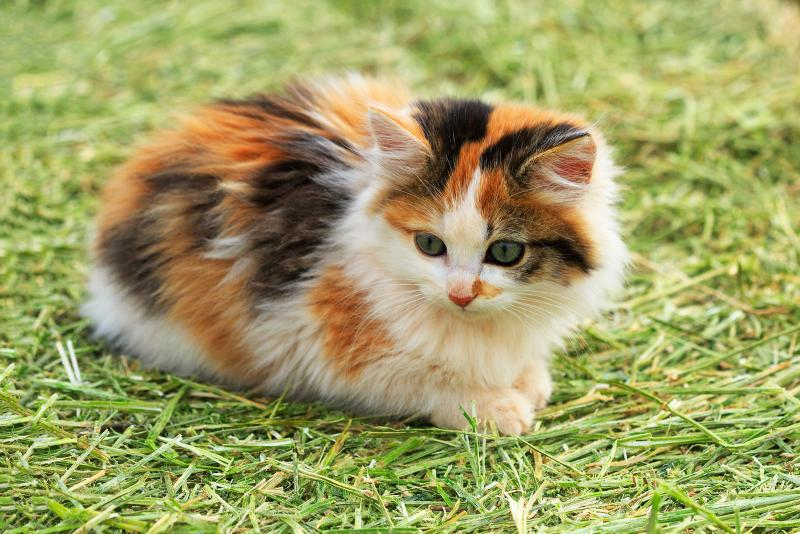
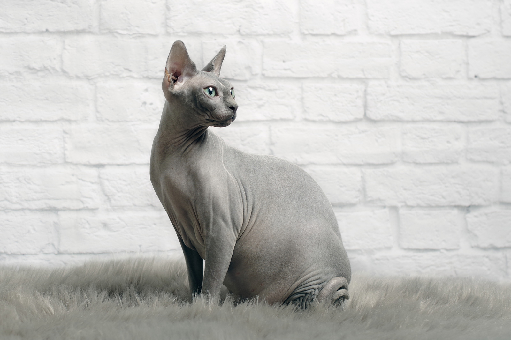
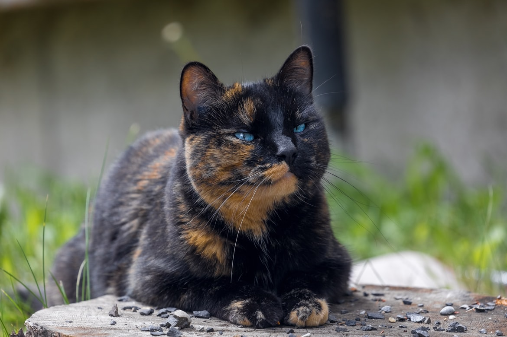

| Image | Breed | Description |
|  | Calico Cat | The American Shorthair cat breed (also known as the domestic shorthair calico) is known for its gentle playfulness. It's an excellent cat for families with children. Along with its long-life and excellent health, it is known for being amiable even in the presence of dogs and children. |
|  | Sphynx Cat | The sphynx cat is an energetic, acrobatic performer who loves to show off for attention. She has an unexpected sense of humor that is often at odds with her dour expression.Friendly and loving, this is a loyal breed who will follow you around the house and try to involve herself in whatever you're doing, grabbing any opportunity to perch on your shoulder or curl up in your lap. As curious and intelligent as she is energetic, these traits can make her a bit of a handful. |
|  | Tortoiseshell Cat | Tortoiseshell cats are gorgeous and one of the rarest types of creatures. Tortoiseshell cats are simply spectacular that are affectionately called “torties .”The fact due to which it is given this name is its colors, which tend to resemble the turtle’s shell. They are found in a variety of patterns and colors and with no two being identical. |